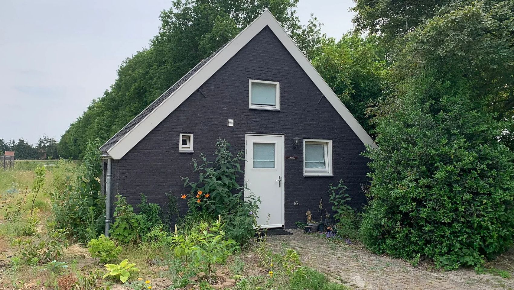
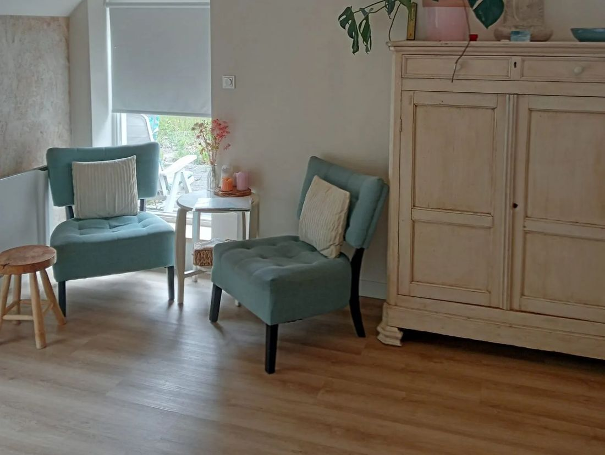
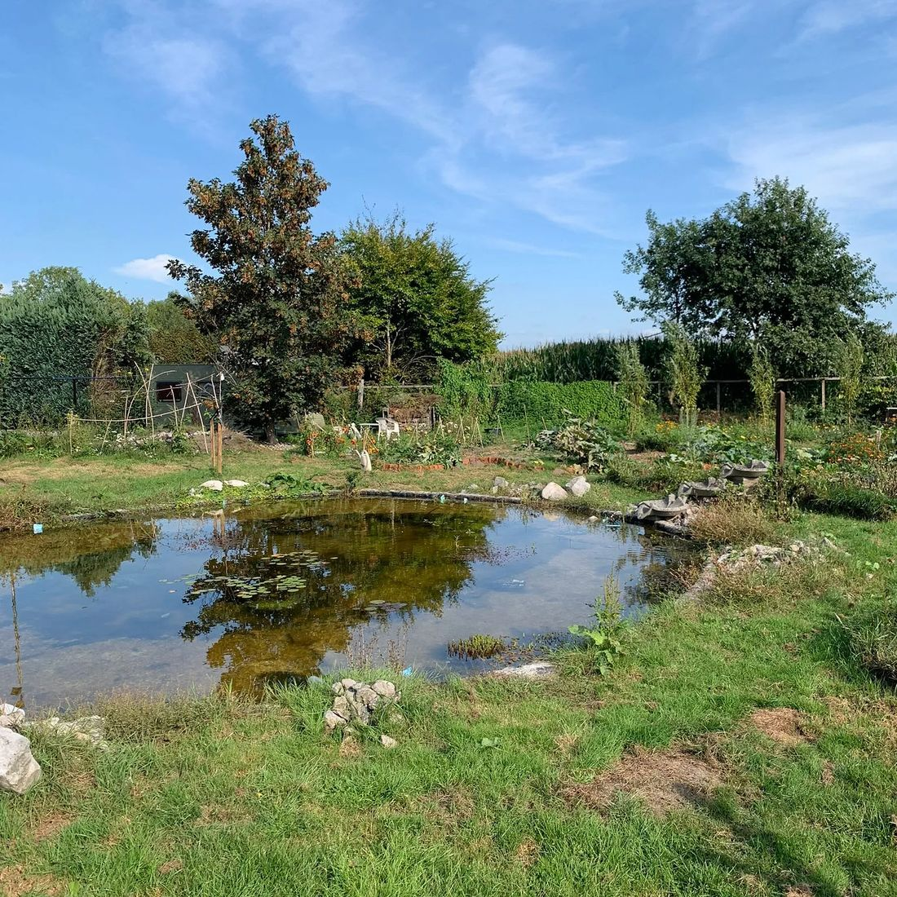
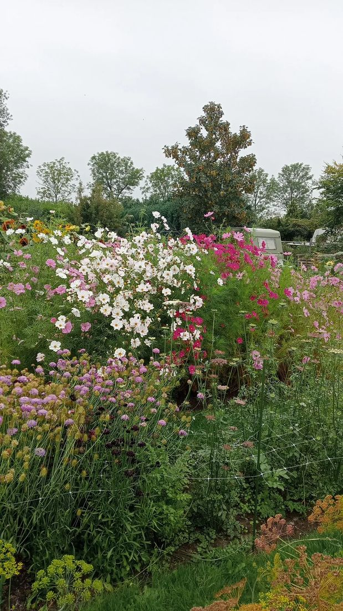
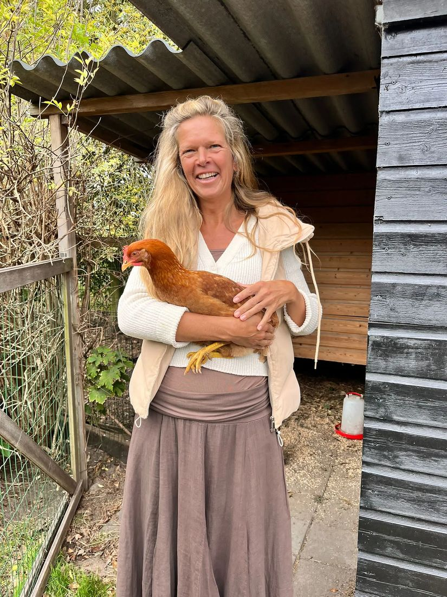
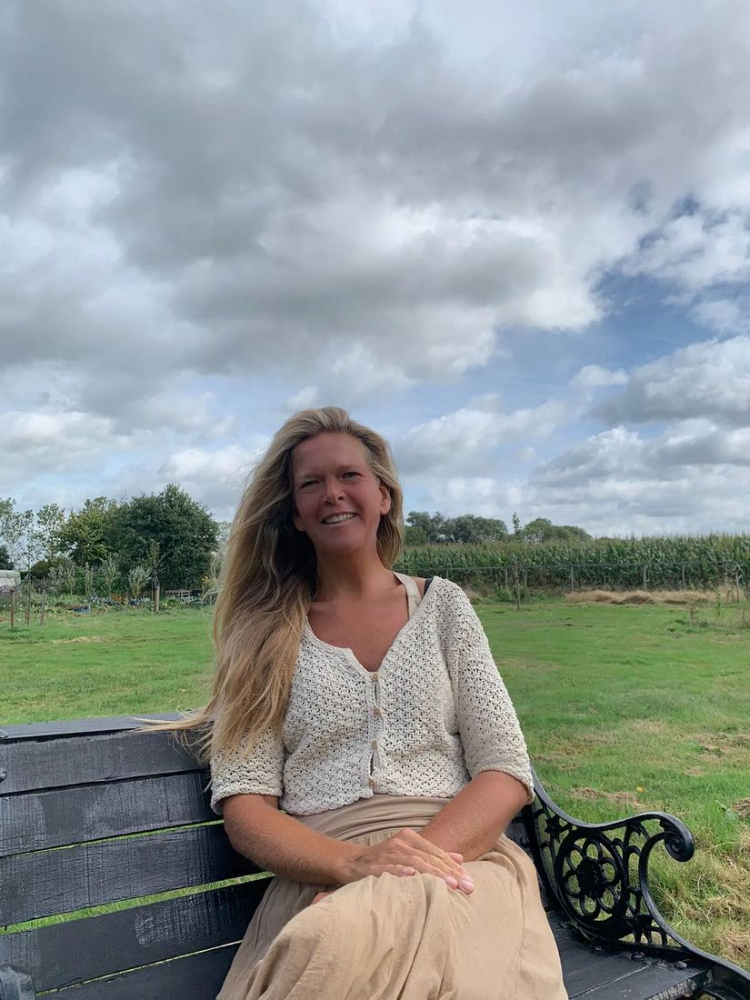

Consult emotioneel lichaamswerk
Persoonlijke begeleiding om emoties te voelen en te uiten, en blokkades los te laten.
€ 751¼ uurMeer info

Emotioneel lichaamswerk, ademsessies en massage bij Tilly Uijlenbroek, in een rustige praktijk in het buitengebied van Breda. Sinds 2002 en vaak (deels) vergoed door je zorgverzekeraar.
Bij elke methode is je lichaam het instrument om weer in contact te komen met wat je voelt. Elke sessie begint met een gesprek.
Persoonlijke begeleiding om emoties te voelen en te uiten, en blokkades los te laten.
Op een zachte manier blokkades loslaten door voller te ademen, stap voor stap begeleid.
Holistische massage: ontspannend en helend, met aandacht voor je hele lichaam.
Een consult of ademsessie, gevolgd door een massage van een uur. Zo kan alles nog meer landen.
Tilly is erkend therapeut en aangesloten bij RBCZ, Kwaliteitstherapeuten en CAT. Daardoor vergoeden veel zorgverzekeraars emotioneel lichaamswerk geheel of deels. Op catvergoedbaar.nl zie je of jouw verzekeraar meedoet.

Boosheid, verdriet en plezier, maar ook rust en intuïtie: je voelt het allemaal in je lichaam. Vaak blijf je erover nadenken in plaats van het te voelen, en dat houdt je tegen.
Emotioneel lichaamswerk (ELW) gebruikt je lichaam als ingang. Je wordt je bewuster van je gevoel en je gedachten, en leert emoties toe te laten en te uiten. Zo kom je dichter bij jezelf.
Liever samen met anderen? Aan de Grintweg zijn regelmatig groepsdagen. Iedereen is welkom, ervaring is niet nodig.
Breng je eigen thema of vraag in en ontdek via systemische opstellingen welke familiepatronen meespelen. In een veilige, respectvolle setting.
Totale aanwezigheid en innerlijke stilte, begeleid door Wouter Berger. Zittend of liggend met muziek, met soep in de pauze.
Ademhalingsoefeningen met zachte bewegingen, om stress en spanning los te laten. Daarna tijd om te delen en na te voelen.
Ongeveer één keer per drie weken samen aan de slag met emotioneel lichaamswerk. Eerst kennismaken? Kom naar de gratis informatieochtend.
Wil je meedoen of hoor je graag wanneer de volgende datum is? Laat het weten, dan zet ik je erbij.



Aqualinde ligt in het buitengebied van Breda, op een terrein met een vijver, een perma- en moestuin, een bloementuin en kippen. De praktijk is het eerste huisje rechts als je het erf oploopt.
Bij de vijver, op het gras of bij de vuurplek is altijd ruimte om even tot rust te komen. Wil je langer blijven? Op het terrein staat een BnB, eventueel te combineren met een consult of massage.
"Het is fijn bij Tilly weg te mogen zakken in jezelf, waarbij alles er mag zijn. Haar warmte, volledige acceptatie en zachte benadering zorgen ervoor dat je je veilig voelt."Daisy, 35 jaarReactie op aqualinde.nl
"Ik heb de massage als heel rustgevend en ontspannend ervaren. Je professionele en aandachtige aanrakingen ontroerden me. Emoties van blijdschap en verdriet kwamen met de massage los en mochten ervaren worden. Ik voelde me bevrijd en ontspannen na je massage."Gwen, 46 jaarReactie op aqualinde.nl
"De massage is zacht, vertrouwd en doet je lichaam en hoofd tot rust komen. Het is zo jammer dat een uur dan 'zo' voorbij is. Dank je wel lieve Tilly!"Anouk, 45 jaarReactie op aqualinde.nl

"Wanneer je leeft met je gevoel, kun je meer vanuit liefde, rust en innerlijke wijsheid leven."
Na mijn vierjarige opleiding emotioneel lichaamswerk ben ik in 2002 gestart als therapeut en trainer. Ik geef individuele sessies, massages, trainingen en familieopstellingen, en af en toe bijscholingen bij de NEM.
Mijn grootste drijfveer is mensen te begeleiden om meer in contact met hun gevoel te komen. Veiligheid, en het erkennen en respecteren van de ander, staan daarbij altijd voorop.
Stuur een bericht met wat je zoekt, dan neem ik contact met je op. Vragen stellen of je aanmelden voor een groepsdag kan ook hier.
Bel of stuur een WhatsApp-bericht. 's Ochtends tussen 9.00 en 9.30 ben ik het beste bereikbaar.
Afspraken op werkdagen tijdens kantooruren. In overleg soms ook 's avonds of in het weekend.
Met de trein of bus? Ik haal je gratis op bij station Breda-Prinsenbeek.